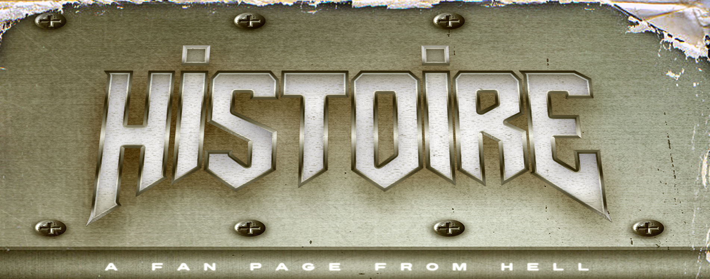
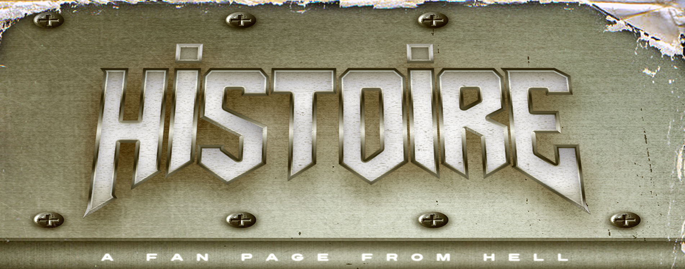

Le metal est un genre musical qui dérive
de plusieurs courants, mais principale-
ment du hard rock. Le rock, en général, est
l’un des styles musicaux majeurs nés
durant le XXe siècle. Après le rock psy-
chédélique et le blues rock des années 60
avec Sweet Smoke et Yardbirds, un
nouveau genre est apparu au début des
années 70 : le hard rock. Mais pendant ce
temps-là, un groupe un peu différent a
commencé à faire parler de
lui à partir de 1969 : Black Sabbath. Le metal est un
genre extrêmement complexe et diversifié,
il est donc assez difficile d’établir des
généralités, mais certains éléments
typiques sont tout de même présents dans
les différents sous-genres.
“Black Sabbath”
Première album de Black Sabbath, 1969
Tout d’abord, le mode mineur prédomine dans les compositions, ce qui confère aux
chansons une connotation obscure. Ce sentiment est renforcé par l’utilisation
massive de l’intervalle dit « triton » (exactement trois tons, ce qui correspond à une
quarte augmentée ou une quinte diminuée) considéré comme l’accord dissonant par
excellence, ce qui participe à l’impression d’écouter une musique dérangeante et
grinçante, d’où le nom de « metal ».
Un très bon exemple est la chanson « Black Sabbath » du groupe du même nom, où
le riff principal repose sur le triton.
En matière d’instruments, on retrouve le combo caractéristique du hard rock : une à
deux guitares électriques (lead et rythmique dans ce cas), une basse et une batterie.